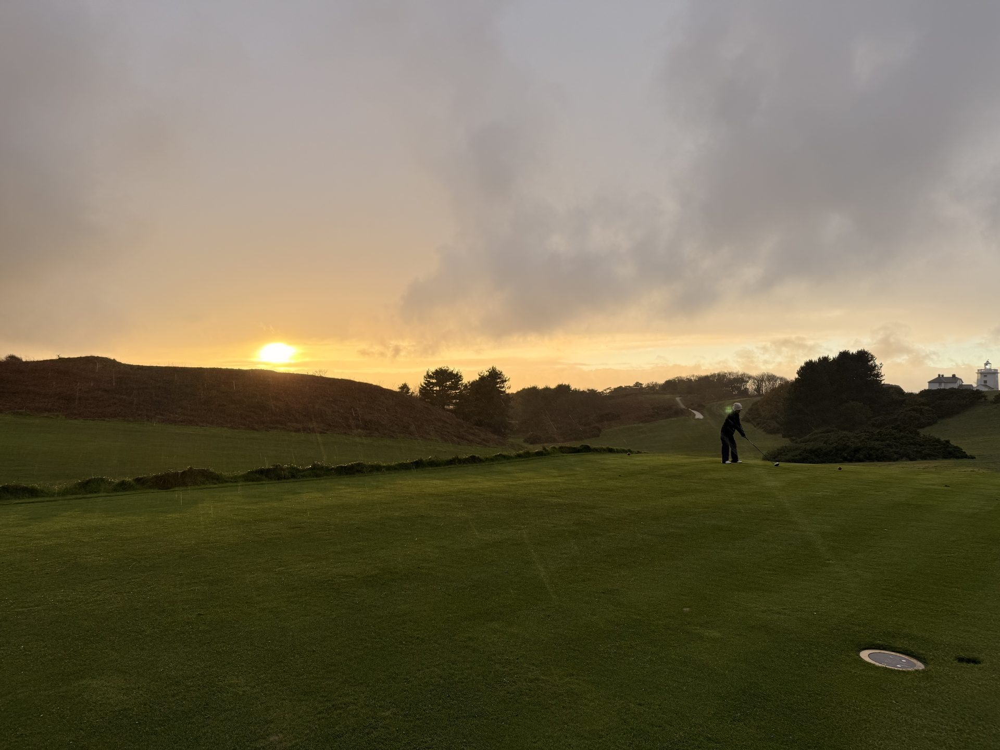
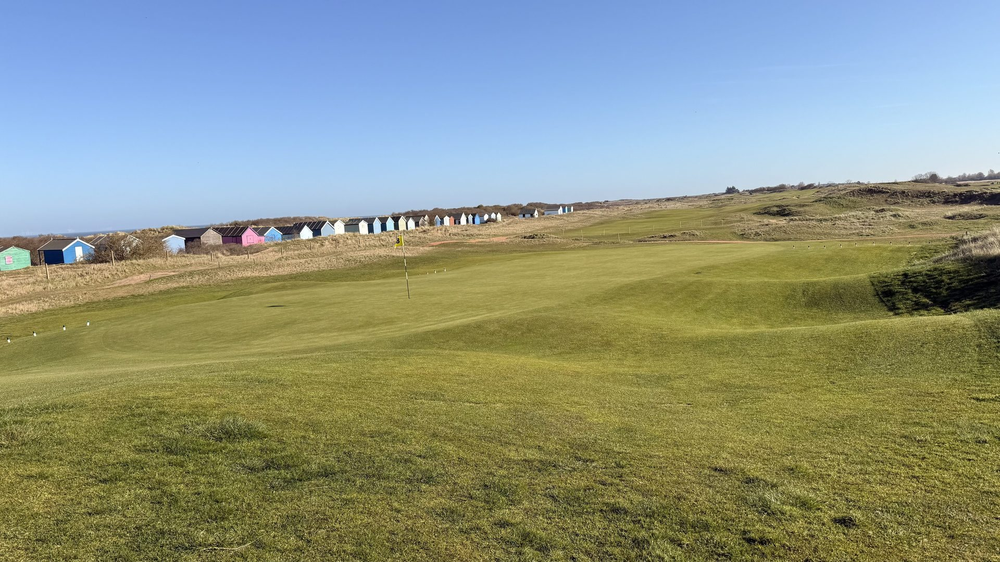

For a private commission — a course closed for a morning, arrival by air — see By Arrangement.

Every itinerary below is a starting point, not a fixed product. Browse our Norfolk courses and Suffolk courses first — then tell us what appeals. We build each trip around the group — the courses they want to play, the pace they prefer, the accommodation that suits them. Tell us what appeals and we'll shape something around you.
Three nights, one county, three courses. The ideal entry point — a proper golf break that gives a genuine flavour of the region without overstretching. Available as a Norfolk edition or a Suffolk edition.

Five nights, one county explored in full. Every significant course, unhurried. Time between rounds to discover the coastline, the towns, the food. The right length for a group that wants to do a county properly.
Our signature itinerary. Seven nights across both Norfolk and Suffolk — the full breadth of the region, from the tidal marshes of Brancaster to the heathland of Aldeburgh. Two entirely different characters of golf. The journey that defines Golf East Anglia.
Ten nights. Both counties explored completely. Eight full rounds including Royal West Norfolk, Hunstanton, all four Suffolk flagships, and a pilgrimage to the Sacred Nine at Royal Worlington. The journey for the golfer who wants everything this region can offer.
10 nights across three carefully chosen bases
8 full rounds across both counties
The Sacred Nine at Royal Worlington
All tee times including Brancaster tide planning
All green fees for included rounds
Inter-stage transfer guidance and route planning
Full day-by-day itinerary and course notes
Restaurant recommendations for each evening
On-call specialist support for all 10 nights
Airport and station transfer guidance
Three sessions across the tour. One before the Norfolk links, one before the Suffolk heathland, and a final session before the Sacred Nine.
Learn more →Tell us your dates, group size and the courses that matter to you. We'll come back within 24 hours with a clear proposal. No obligation. International guests: we quote in GBP, USD, EUR or AUD.
For something arranged entirely around you — a tee sheet closed for the morning, arrival by air, a week built outward from the tide rather than squeezed around it — there is By Arrangement.